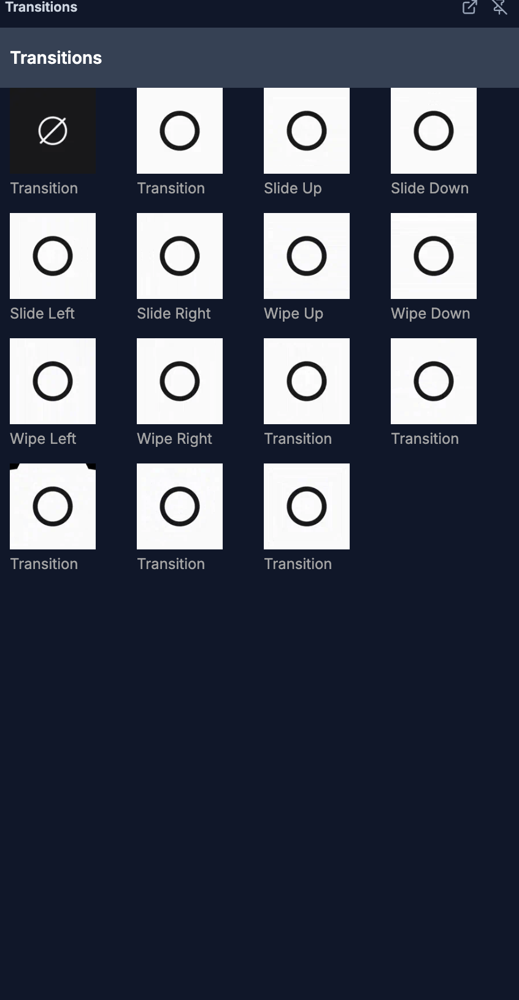

For humans — and for AI helping humans. This document describes how a person edits video by hand using the on-screen controls of the SkillTown video editor. It is not an AI skill or an automation API, so if you are an AI agent, do not treat these steps as callable commands — for programmatic/automated editing use the agent skills and commands documented elsewhere (see
_Agent/AGENTS.md). You may, however, read this doc to answer a user's "how do I…" questions and walk them, step by step, through performing these actions themselves in the editor UI.Add smooth visual effects between two adjacent clips so one shot blends, slides, wipes, or reveals into the next.
Where to find it¶
Open the Effects tab in the menu panel to browse transition previews. (This is the tab with the transition icon; the panel that opens is headed Transitions.)
Note: the Effects menu tab is for clip-to-clip transitions. This is different from the Effects section inside the properties panel, which adds visual effects like glow, blur, and grain to a single selected item — see Visual Effects, Filters, Chroma Key & Color.
You can also work from the timeline. When two supported clips touch on the same track, a small transition marker appears at the cut between them. Click that marker to open the Transition popover.
What you can do¶
- Browse transition preview cards in the Effects tab (headed Transitions).
- Add a quick transition from a clip’s right-click menu with Transition to next.
- Use the timeline transition marker to choose the transition style.
- Adjust Duration with a slider or preset chips.
- Use Remove or None to return the cut to no visible transition.
How to browse available transitions¶

- Click the Effects tab in the menu panel (the panel opens headed Transitions).
- Review the preview cards. Each card shows an animated thumbnail and a label.
- Use the card names to decide the direction or reveal style you want before applying it on the timeline.
The timeline transition picker exposes these user-facing choices:
| Transition | What it does |
|---|---|
| None | Keeps the cut without a visible transition. |
| Fade | Crossfades from one clip into the next. |
| Slide Up | Slides the next clip upward into view. |
| Slide Down | Slides the next clip downward into view. |
| Slide Left | Slides the next clip left into view. |
| Slide Right | Slides the next clip right into view. |
| Wipe Up | Reveals the next clip with an upward wipe. |
| Wipe Down | Reveals the next clip with a downward wipe. |
| Wipe Left | Reveals the next clip with a left wipe. |
| Wipe Right | Reveals the next clip with a right wipe. |
| Flip | Flips from one clip to the next. |
| Clock Wipe | Reveals the next clip in a circular clock motion. |
| Star | Reveals the next clip through a star shape. |
| Circle | Reveals the next clip through a circle. |
| Rectangle | Reveals the next clip through a rectangle. |
How to add a transition between two clips¶
- Place two video or image clips on the same timeline track.
- Move or trim them so the first clip ends exactly where the next clip starts. When the clips touch, the cut shows a small transition marker.
- Click the marker at the boundary between the clips.
- In Transition, choose a preset such as Fade, Slide Up, Wipe Left, or Circle.
- Click Apply. The marker changes to an active transition indicator, and playback blends the outgoing clip into the incoming clip.
How to add a quick transition from the clip menu¶
- Right-click the first clip in a pair of adjacent clips.
- Choose Transition to next.
- Pick one of the quick options. The quick menu shows the preset name and its default duration, such as fade with 0.5s.
- The editor adds the transition to the next clip on the same track.
If there is no next clip on that track, the transition option is not shown. If the editor cannot find a next clip, it warns No next clip on this track to transition into.
How to change transition style and duration¶
- Click the transition marker on the timeline.
- In Transition, choose a different preset. The selected preset shows a check mark.
- Under Duration, drag the slider to set how long the overlap lasts.
- Or click a duration chip: 0.3s, 0.5s, 1.0s, or 1.5s.
- Click Apply to save the change.
- To remove the effect, click Remove. You can also choose None to keep the cut without a transition.
Tips & good to know¶
- Transitions work at the cut between adjacent clips on the same track. If there is a gap, move the clips together first.
- The timeline marker is the main editing handle for changing a transition after it is created.
- Duration is shown in seconds. The slider supports short transitions around 0.2s up to longer transitions around 2.0s.
- Very long transitions are automatically limited by the length of the surrounding clips, so short clips may not show the full requested duration.
- Quick transitions use a default 0.5s duration. Use the marker popover if you want a different duration.
- Transitions are visual effects for clips; they are separate from item animations such as fade-in or slide-in on a single selected item.